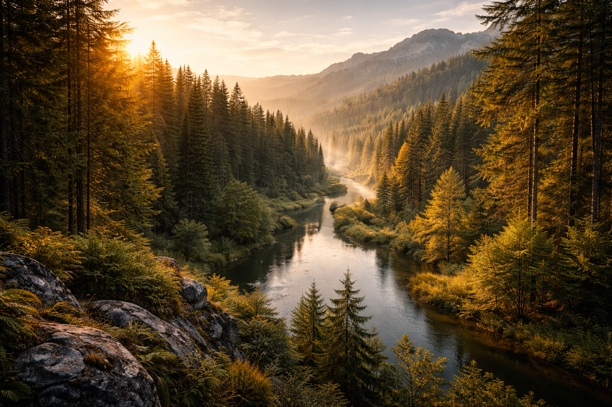
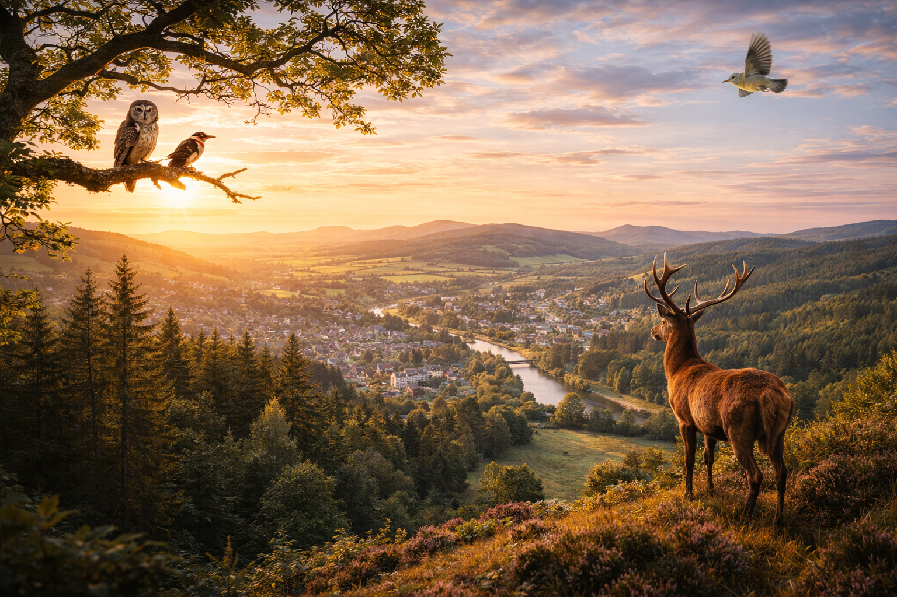
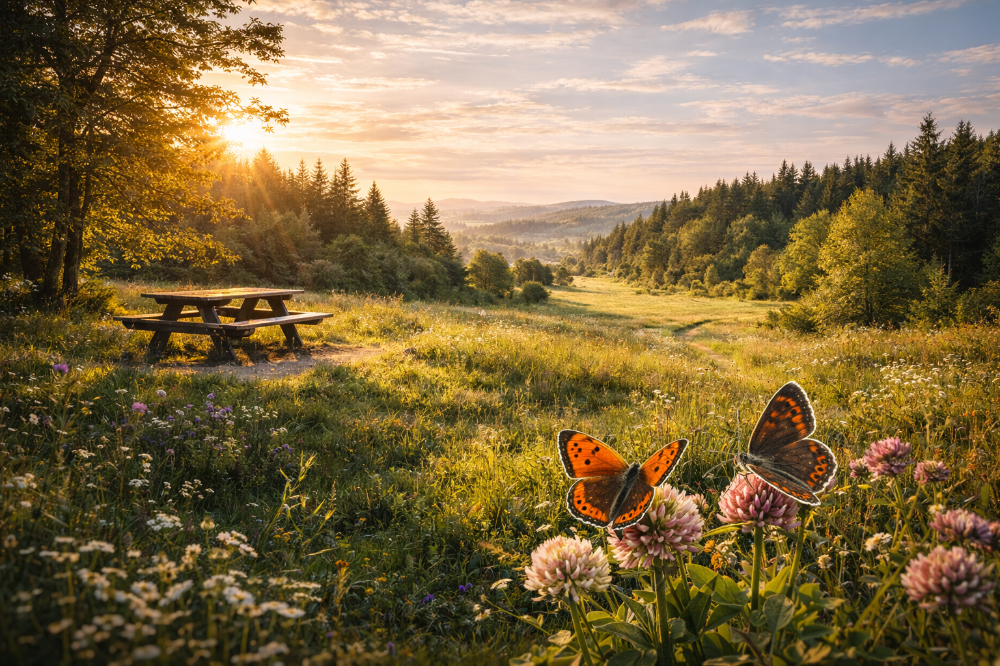
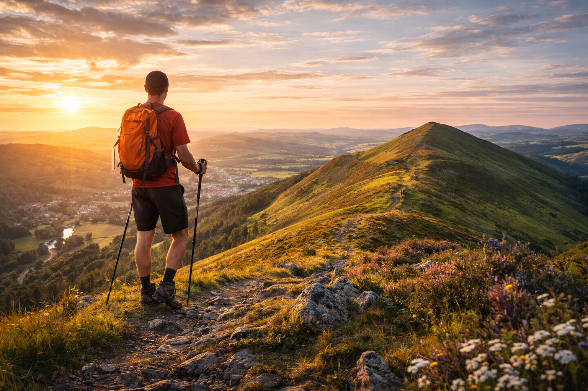

 Droncar Forest Droncar is a large forest on the south side of the Tweed Valley with peaceful trails, valley views and historical points of interest. Easy access trail from the picnic site Remains of Droncar Tower from the 1500s Iron Age hill fort at Castle Knight Views across the Tweed Valley
 Muirdac Hill Muirdac Hill gives commanding views over Peebles and Tressforest, and it is a strong choice for wildlife spotting. Views over Peebles and Tressforest Bird species including warblers and woodpeckers Chance to spot red deer or tawny owls
 Leethorn Meadows Leethorn is a quieter forest area with meadows, open views and butterfly habitats that make it suitable for a relaxed walk. Butterflies such as Small Copper Northern Brown Argus habitat Picnic area with open meadow views
 Airy Hill Route Airy is a more demanding route with steep sections and wide views. Allow around five hours and bring suitable footwear. Classic Borders hill route Steep climb with panoramic views Longer route for stronger walkers